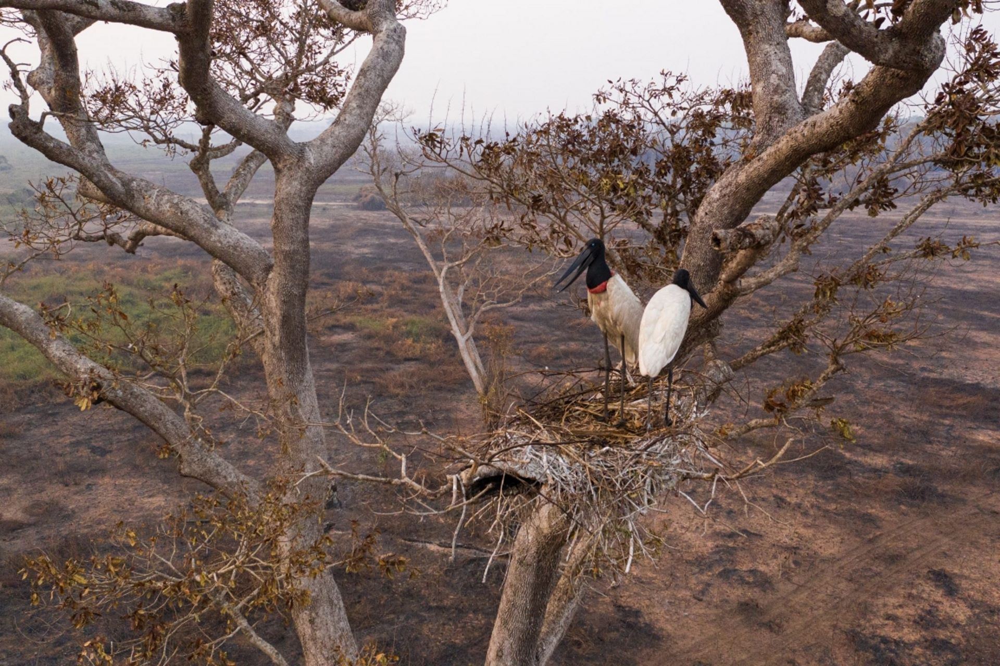
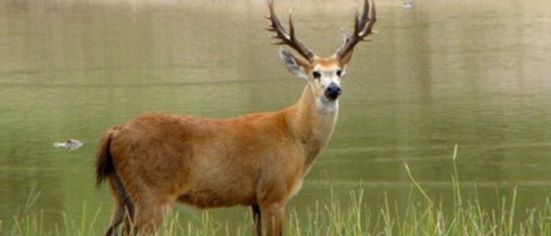
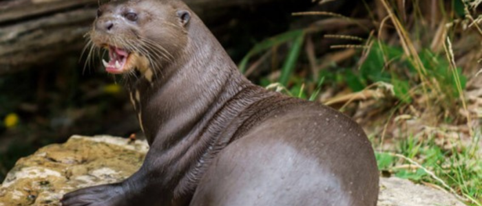

Clima e Terreno
Fonte: https://images.app.goo.gl/uChfmLGZ2DDxqjwo7s
O Pantanal é caracterizado por um clima tropical úmido com duas estações distintas: uma estação seca, de abril a setembro, e uma estação chuvosa, de outubro a março. Durante a estação chuvosa, as planícies alagáveis do Pantanal são inundadas pelas águas dos rios que transbordam, criando um vasto sistema de pântanos, lagoas e áreas alagadas.
Fonte: https://images.app.goo.gl/HrrUx45wPWEYTs9a7
O terreno do Pantanal é predominantemente composto por planícies de baixa altitude, intercaladas por cordilheiras e chapadas que se elevam levemente acima do nível das águas durante a estação seca. A vegetação varia de savanas gramíneo-lenhosas nas áreas mais secas a florestas ribeirinhas ao longo dos rios e córregos permanentes. Este bioma é reconhecido por sua rica biodiversidade, abrigando uma variedade impressionante de espécies de fauna e flora adaptadas às condições sazonais de inundação e seca. A combinação única de clima, terreno e hidrologia torna o Pantanal um dos ecossistemas mais singulares e importantes do planeta.
CERVO-DO-PANTANAL: O ANIMAL EM EXTINÇÃO
O cervo-do-pantanal é o maior veado da América do Sul, com quase 200 cm de comprimento e até 2,1
metros de altura, incluindo os chifres, que medem de 40 a 45 cm. Os machos são maiores que as
fêmeas, chegando a pesar 130 kg, além de possuírem chifres e o pescoço mais musculoso. Ele
Alimenta-se, principalmente, de gramíneas e plantas aquáticas e semi-aquáticas. Onças-pintadas,
onças-pardas e sucuris podem predar cervos adultos, e o lobo-guará pode predar os seus filhotes.
Em geral, vive em áreas pantanosas e em savanas sazonalmente inundadas. Evita florestas e seleciona
áreas entre 30 e 60 cm de profundidade. No Pantanal, eles se dispersam na cheia e concentram-se
perto de rios e áreas alagadas na seca. Possuem hábitos diurnos, com picos de atividade no início da
manhã e final da tarde, evitando horários mais quentes. Porém, podem mudar seus hábitos para
noturnos em regiões mais antropizadas, nas quais há a pressão de caçadores. Saltam com grande
desenvoltura e nadam bem, podendo atravessar grandes rios. As fêmeas formam pequenos grupos
familiares e os machos são mais solitários.
ARIRANHA: MESTRE DOS RIOS E GUARDIÃS DAS ÁGUAS
A ariranha (Pteronura brasiliensis), também conhecida como lontra-gigante, é um animal vertebrado,
pertencente à classe Mammalia, família Mustelidae e subfamília Lutrinae, a família das lontras. A
ariranha habita ambientes de água doce e sua distribuição ocorre pela América do Sul, em países como
o Brasil, Peru, Colômbia, Paraguai, Suriname, Venezuela, entre outros.
A ariranha apresenta o corpo longo coberto por uma pelagem densa e de cor marrom com uma mancha
branca no pescoço, uma cauda robusta e achatada, que a auxilia na natação, e tamanho que varia entre
1,5 e 1,8 metro. Assim como a cauda, a ariranha possui outras características que a ajudam na
natação, como membranas interdigitais, localizadas entre os seus dedos.
As ariranhas habitam ambientes de água doce, como rios, lagos e suas margens. Geralmente elas buscam
locais onde há águas mais calmas; menos ação antrópica; maior abundância de alimentos; margens com
declives suaves; e vegetação mais densa.
A ariranha tem hábitos diurnos e alimenta-se preferencialmente de peixes, podendo estar incluídos
também em sua alimentação crustáceos, moluscos e pequenos vertebrados, como alguns mamíferos, aves e
répteis.